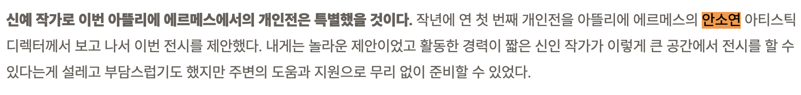
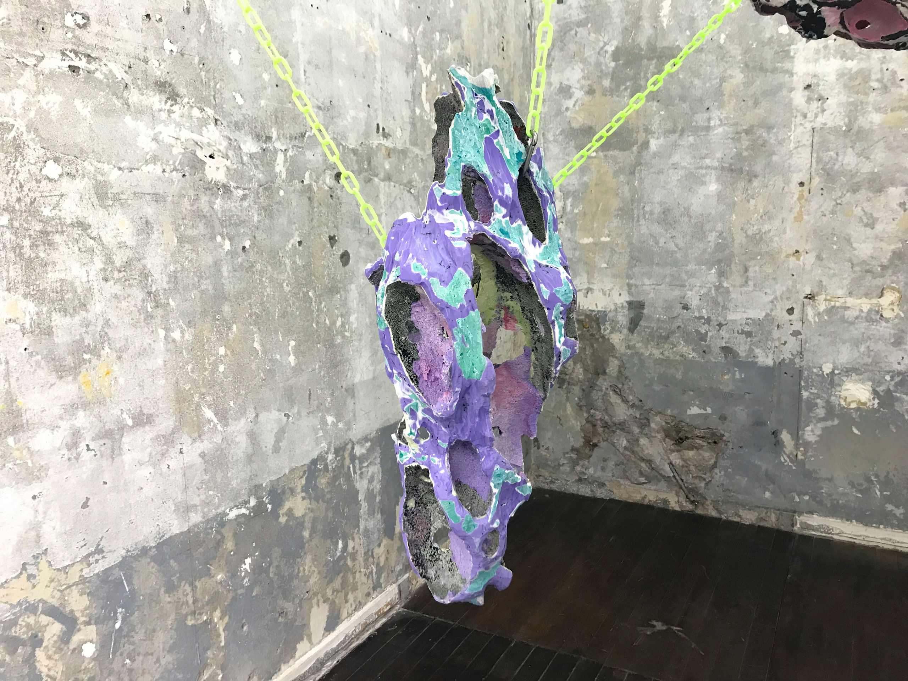
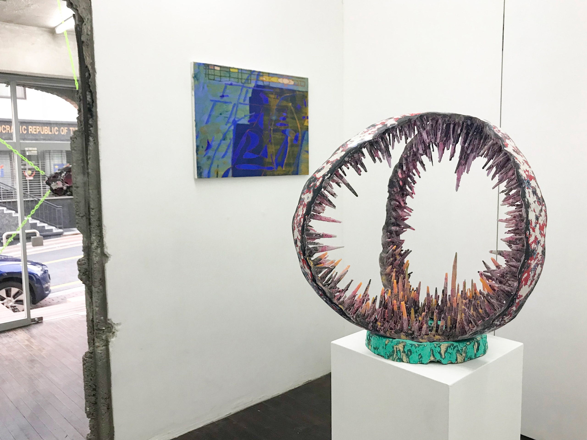
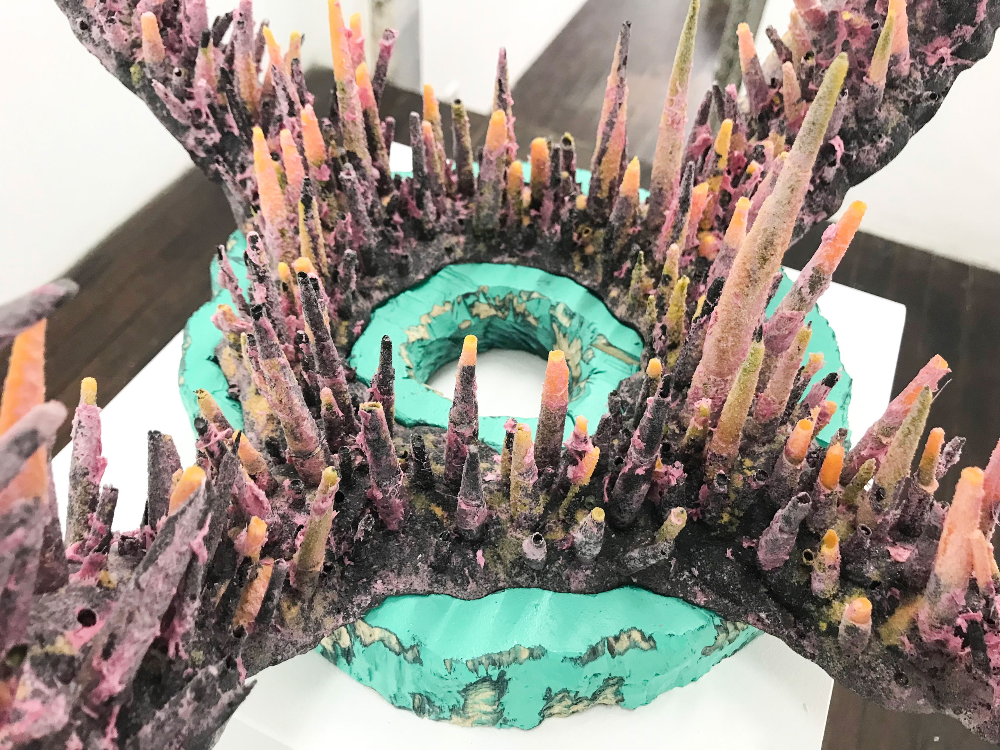
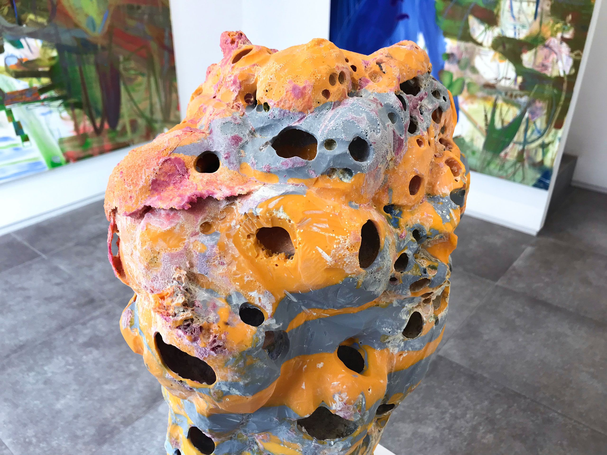
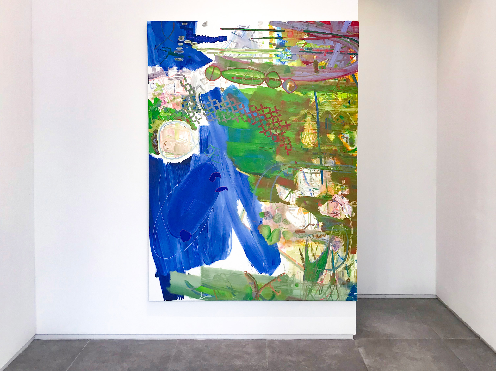
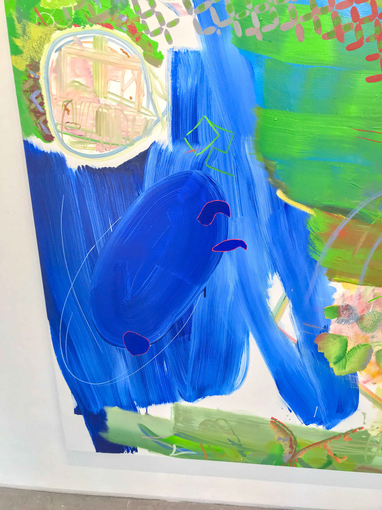

'Two’와 ‘Tu’를 정말 같은 '투'로 읽어도 되는 것일까 2: 작가의 입
<안녕하세요, 손
방금 중간지점의 '제3회 꼬리에 꼬리를 물고: odd'에 관한 메일을 읽었습니다.
메일만 봐도 전시의 풍성함과 알뜰함이 전해지네요.
(여기서 왜 '알뜰함'이라는 단어가 나왔는지 저도 모르겠어요.)
연주 퍼포먼스... 그 좋은 것을 혼자만 보셨다니............
질투가 나네요. 하...... 역시 사람은 선입견 없이 부지런해야 하나 봅니다...
저는 오늘 또다시 성시경과 현남의 2인전 'Two Tu'에 관해 이야기하려고 합니다.
지난 메일에 예고했듯이 이번에는 P21에 가기 전에 약간의 자료조사를 진행했어요.
현남. 현남. 현남.
어디서 이름을 들어본 것 같아서요.
찾아보니 아틀리에 에르메스에서 '무지개의 밑동에 굴을 파다'라는 개인전을 진행하신 바 있더라고요. 아틀리에 에르메스의 홈페이지에 들어가 전시 서문과 작가 인터뷰를 찾아보았습니다.
현남 가이드북
일단 현남 작가는 1990년생입니다. 에르메스에서 개인전을 하는 작가들 중에는 젊은 축에 속한다고 볼 수 있죠. 저는 전시나 전시 기록을 볼 때 은근히 그런 것 궁금해하거든요. "이 작가는 어떤 과정을 거쳐 이 공간에서 전시하게 되는 걸까?" 현남 작가의 경우 그 답이 메종 코리아 인터뷰에 나와 있었습니다.
안소연 아티스틱 디렉터가 전시 제안을 하셨다고 하더군요.
갑자기 작년에 발표된 제19회 에르메스 재단 미술상 수상자가 류성실 작가라는 사실이 또 문득 떠오르네요. (보통 이 상은 '신진 작가에게 주는 상을 받거나 비엔날레에 한 번이라도 초대되는 등 일종의 ‘등단’을 거친 40세 전후의 작가에게 돌아갔다'고 합니다)
이 분이신 듯한데요.
기존 미술계의 문화와는 다른 선택을 했다는 점이 무척 대단하게 느껴지네요.
사실 위에 첨부한 '현남 가이드북'을 확인해보시면 전시 서문부터 인터뷰 진행까지 모두 안소연 디렉터가 진행했다는 사실을 알 수 있어요. 특히 인터뷰 내용을 보시면 인터뷰라는 형식을 통해 현남 작가의 매체론, 작업론, 작업 과정, 관심을 가지는 사회 현상, 밴드로 활동했던 배경, 신작 소개, 디스플레이에 관한 설명 등 사실상 작가가 자기 PR을 할 수 있는 말문을 전폭적으로 열어준 경우로 보이거든요.
저 사실 이 인터뷰 보기 전까지는 현남 작가 작업이 그저 낯설어서 별로 관심을 두지 않았는데요.
이 인터뷰를 본 이후로
"아, 코인 관련해서 뜨거운 이슈인 '채굴'이란 개념을 작업으로 다루네? 완전 동시대다...
색 선정에서도 애니메/서브컬쳐의 향기가 묻어나온 거였었구나..
평소에 기지국을 감상하러 다닌다고? 완전 또라이 아니야,,? 너무 매력적인데?
작품의 완성 형태를 상정하지 않고 작업하는 것도 그렇고 이 사람 완전 동시대미술의 조건을 다 갖추고 있고 생각도 잘하고..
정말 '새로운' 작업을 하는 작가구나. 짱이다.!"
라며 그를 전혀 다르게 바라보게 되었습니다.
이게 진짜 신예 '발굴'이 아닐까 싶네요.
얼마 전에 친구랑 채팅하다가 친구가 "잘 키운 비평가 하나만 있으면 열 동료 필요 없다."라고 소설가 백민석이 했던 말을 전해주었는데요.
진짜 맞는 말 같습니다.
-> 이거 디스플레이 아이디어 낸 사람한테 작가가 고맙다고 포옹해줘야 된다고 생각했어요
     네, 그렇게 전시도 잘 봤구요. 자료조사를 해서 얻은 정보가 있으니 작품에서 보이는 게 참 많아서 좋았습니다.
작품을 감상한 건지 정보를 확인한 건지 모르겠는 찜찜함이 들기는 하지만요.
이 자료 조사와 전시 감상을 통해 과연 제 감수성은 조금이라도 늘어난 것일까요?
새로운 걸 눈 앞에 두고도 못 알아본 까막눈인 제가 어떻게 해야 좋은 눈을 갖게 될지 모르겠습니다.
정답: 열심히 보기
메일 쓰다가 요즘 생각하던 게 생각난 건데, 지금 시대 천재는 그냥 많이 보는 사람인 것 같아요.
ypc space에서도 현남 작가가 전시하던데 그것도 보러가야겠네요.
우리 같이 천재 해요.
그럼 다음 메일에서 뵙겠습니다. :)
고마워요.
재훈 드림